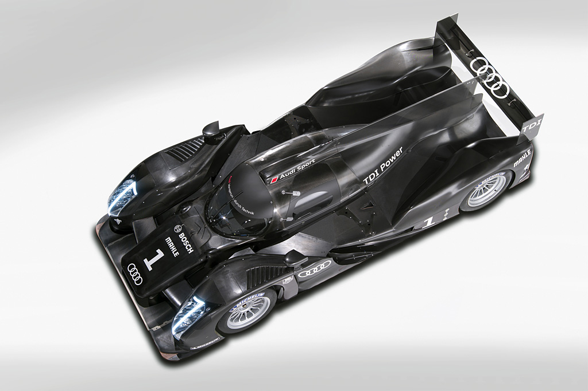
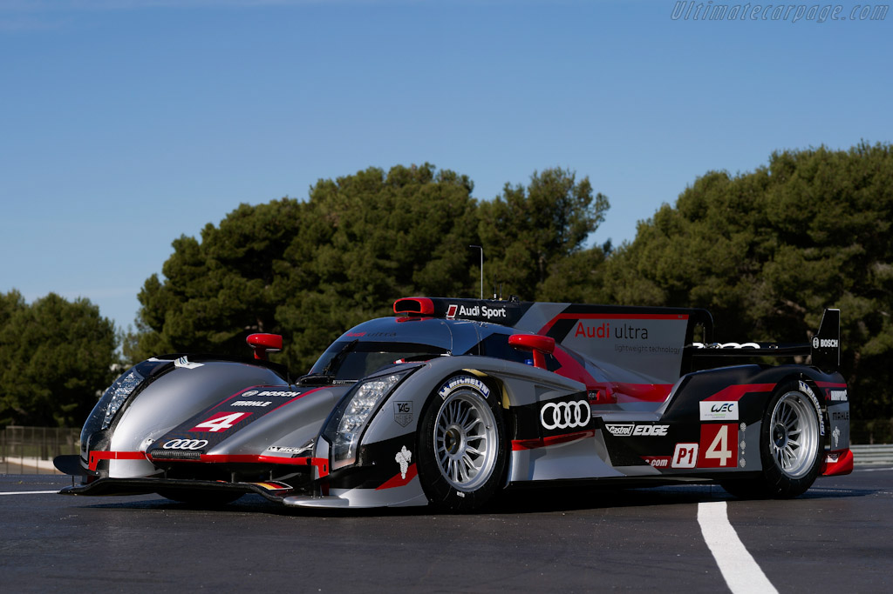

Audi R18 : SALAH SATU RAJA DIESEL DI LE MANS
Oleh Danishvara Ramardhi Adhi (11210251000104)

Kejuaraan Dunia Ketahanan/World Endurance Championship(WEC) merupakan ajang balapan ketahanan kelas dunia yang diselenggarakan oleh Fédération Internationale de l'Automobile (FIA) dan Automobile Club of the West of France(ACO). Ajang ini didirikan pada tahun 2012 dan menjadi penerus dari InterContinental Le Mans Cup sekaligus kembali menjadi nama ajang balapan sejak tahun 1985 silam. Adapun seri yang paling dikenal dari ajang balapan ini ialah 24 Hours of Le Mans, Yang merupakan balapan yang legenderis dan memiliki prestisius yang tinggi. Balapan ini sejak tahun 2012 menjadi seri dari ajang balapan World Endurance Championship (WEC). Dalam Ajang World Endurance Championship(WEC) ini terdapat beberapa kelas,Mulai dari kelas mobil GT (Grand Touring),lalu kelas prototipe seperti LMP1 (Le Mans Prototype 1 ) yang sekarang menjadi kelas LMH (Le Mans Hypercar),hingga kelas inovasi (Innovative Class) yang hanya ada pada seri 24 Hours Of Le Mans.
Pada artikel ini penulis akan menjelaskan salah satu mobil yang unik pada kelas (LMP1), Yaitu mobil milik team Audi Sport Team Joest yang bernama Audi R18.Audi R18 merupakan salah satu mobil pada kelas LMP1, mobil ini merupakan penerus dari Audi R10 dan Audi R15. Adapun keunikan dari mobil ini ialah karena menggunakkan mesin diesel seperti kedua pendahulunya dan Peugeot 908 HDI FAP. Hal ini dianggap unik karena disaat pabrikan lain menggunakkan mesin bensin untuk mobil balapnya,Audi memilih untuk menggunakkan mesin diesel agar dapat mendapatkan efisensi yang lebih tinggi daripada lawan-lawannya yang menggunakkan mesin bensin.

Pada musim ini,Audi R18 memiliki dua versi. Dimana Audi membuat Audi R18 non hybrid (Ultra) seperti musim sebelumnya dan juga versi hybrid (e-tron quattro). Untuk Audi R18 TDI Ultra,memiliki mesin 3.7 V6 TDI yang memiliki output yang lebih kecil dari versi TDI,yaitu 510 dk dan 850 nm serta tangki BBM yang lebih kecil dari versi TDI (65ltr vs 60ltr). Untuk transmisi,mobil ini masih sama seperti versi sebelumnya. Kemudian untuk versi Hybrid (e-tron quattro), Untuk mesin dan transmisi masih sama seperti versi Ultra dan TDI. Tetapi perbedaannya adalah pada versi ini memiliki ukuran tangki BBM yang lebih kecil (58ltr) memiliki motor listrik yang menggerakan roda depan,motor listrik tersebut dapat memberikan tenaga sebesar 500kj (kilojoule) dan motor listrik tersebut akan bekerja ketika mobil menyentuh kecepatan 120km/h. Pada Musim ini,Audi sukses meraih titel juara dunia klasemen konstruktor dan pembalap dengan mengoleksi tiga kemanangan.
2011
 Model awal Audi R18 ini diluncurkan pada tahun 2011 dengan nama "Audi R18 TDI",Mobil ini memiliki mesin berkapasitas 3.7 liter (3.700cc) V6 TDI (Turbo Direct Injection) yang memuntahkan tenaga kurang lebih sebesar 540 dk yang dikawinkan dengan transmisi Xtrac 6 percepatan sequential.Serta memiliki berat kurang lebih 900kg. Pada musim ini,Audi finis pada posisi kedua pada klasemen akhir dengan meraih 1 kemenangan.2012

Pada musim ini,Audi R18 memiliki dua versi. Dimana Audi membuat Audi R18 non hybrid (Ultra) seperti musim sebelumnya dan juga versi hybrid (e-tron quattro). Untuk Audi R18 TDI Ultra,memiliki mesin 3.7 V6 TDI yang memiliki output yang lebih kecil dari versi TDI,yaitu 510 dk dan 850 nm serta tangki BBM yang lebih kecil dari versi TDI (65ltr vs 60ltr). Untuk transmisi,mobil ini masih sama seperti versi sebelumnya. Kemudian untuk versi Hybrid (e-tron quattro), Untuk mesin dan transmisi masih sama seperti versi Ultra dan TDI. Tetapi perbedaannya adalah pada versi ini memiliki ukuran tangki BBM yang lebih kecil (58ltr) memiliki motor listrik yang menggerakan roda depan,motor listrik tersebut dapat memberikan tenaga sebesar 500kj (kilojoule) dan motor listrik tersebut akan bekerja ketika mobil menyentuh kecepatan 120km/h. Pada Musim ini,Audi sukses meraih titel juara dunia klasemen konstruktor dan pembalap dengan mengoleksi tiga kemanangan.
Untuk selengkapnya, klik disini!
Untuk selengkapnya, klik disini!
Untuk selengkapnya, klik disini!
Untuk selengkapnya, klik disini!